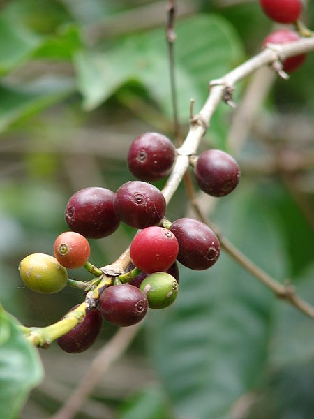
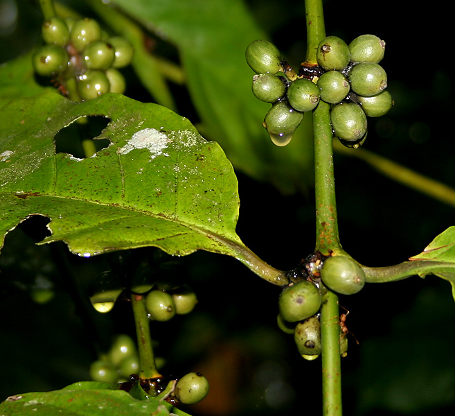

Biji Kopi Arabika
Feb 12, 2007Views : 3,487,497
Biji kopi arabika, jenis kopi dengan cita rasa terbaik.
Read More

Biji Kopi Robusta
Feb 12, 2007Views : 3,487,497
Biji kopi robusta, jenis kopi kelas 2.
Read More

Kopi Luwak
Feb 12, 2007Views : 3,487,497
Biji kopi luwak hasil fermentasi alami di perut hewan luwak.
Read More